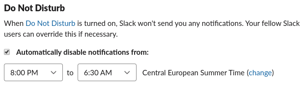
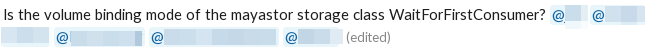
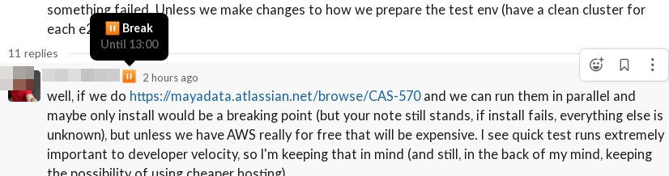

Slack
We are using Slack for non-urgent semi real-time, simple communication. That means, that
- Nobody is required to response on Slack. Slack is treated as strictly best-effort communication platform.
- People will probably overlook messages in channels, when they get back from vacation.
- Please, don’t sent messages, which really should go via email.
- You don’t require “immediate” response.
- Person on the other side, will either need to put effort into understanding your question/comment and/or she will need to put effort into responding. Basically, if you are writing something what is longer than 3 sentences, that should probably go to email or ticket.
- Please don't send information which should be captured as Jira ticket or Confluence page only to Slack.
- We tend to use Slack as a type of “social network”. There are channels for casual conversations, sharing interesting links etc.
Please read Slack Etiquette Guide, which is an excellent overview of the key concepts for sustainable Slack.
How to Set Up Your Slack App
Elegant Puzzle by Will Larson lists ad-hoc interruptions as the second most "effective" time killer in any company:
Cit: The second most effective time thief that I've found is ad hoc interruptions: getting pinged on HipChat or Slack, taps on the shoulder, alerts from your on-call system, high-volume email lists, and so on.
The strategy here is to funnel interruptions into an increasingly small area, and then automate that area as much as possible. Ask people to file tickets, create chatbots that automate filing tickets, create a service cookbook, and so on.
But there are few ways how one can help with solving the issue in the Slack itself. On both the sending and receiving side.
Notifications, Meetings and Your Zs
It is frequently convenient to mention somebody (those @epowell). That will mark a particular message and typically trigger more aggressive notification being sent to the person. Frequently, one doesn't need to send the notification straight away. E.g. I am mentioning somebody who is already out of the office (maybe she is in a different time-zone, or maybe I am working over-time). I don't want her to respond immediately, but I want to mark the message for her...
It is your responsibility to set up working hours. You should do two things:
- check your home time zone at slack account > settings. Mine looks like this:

- open user profile. Click on "more options" (tree dots) and select View prefereces. You will be able to find Do not Disturb settings under Notifications. Mine looks like this:

-
If you want to be fancy or noticed that Slack's DnD settings do not take weekends into consideration, connect dontinterrupt.app which allows you to set DnD times schedule day by day. Moreover you can also connect your google calendar so notifications are off during your meetings and notifications from slack do not suddenly pop up to your screen while sharing it on a meeting.
-
Fine tune your notifications: I have a bunch of channels that I want to read, but do not need to be notified for each message. Right click on the channel and select Change notifications. In preferences (under workspace name Mayadata in top left corner) you can see all channels that have specific notification settings.

Source of Interruptions
One can help it on the receiving end by above settings. Sender can help a lot too. Be kind to your colleagues and create more relevant messages by setting your enter key to insert a newline instead of sending the whole message. Go to Preferences (top-left corner, click on the Mayastor workspace name and select Preferences). In Advanced you'll see:

-
Consider editing your messages instead of flooding with short "*fixed spelling" or similar messages and consider using rich text to allow readers to orient themselves quicker in longer messages.
-
Avoid directly mentioning (many) people in your message unless it's really urgent or message is really direct but you want to share it in a wider audience. Make sure the target audience is in the channel, but allow people to manage messages at their own pace. Understand that with slack one can be already in multiple discussions and starting another synchronously is humanly impossible.

-
Use threads. Seriously. It allows people to avoid notifications for discussions about topics they do not care about while reacting faster (not disabling notifications) for channels they're in. It also allows sharing conversations via thread link which is impossible if messages are spread over the channel or even interleaved with different discussions. For people in different time zones not using threads essentially prevents them from participating.
-
Replace short follow-up messages with emoji reactions.
-
Use public channels.
Slack Status
Unintrusive way for your colleagues to discover your status (whereabouts, focused work, break, sickness) rather than sending yet another notification and requiring them to remember (or search through history) is using slack status. To set slack status, click on your profile picture in the top right corner and select the Update your status option:
Your status emoji is seen with your name every time your avatar appears in slack. In conversation and on the sidebar. While hovering over the status, the status text is shown. For example you can show you're on vacation, sick, or just having a break. Set a time to clear to show when you'll be available again.



If you're lazy (the good lazy :smile:) like me dontinterrupt.app connected with your google calendar can set these slack statuses automatically and you'll help colleagues that would like to schedule a meeting with you too by keeping your calendar up to date! (pro tip: put slack emoji like :taco: in google calendar event title and dontinterrupt.app will set it to the slack for you).
There's also google calendar slack app that can set your status, but doesn't set do-not-disturb. It might still be useful not to miss last minute meetings for people who avoid notifications for every email without complex filtering rules.
Tips and Tricks
- Change channels quickly with
CTRL+K(settings allows list of ignored > channels) - Create snippet with
CTRL+SHIFT+ENTER - Subscribe to existing thread by adding emoji reaction or just clicking thread menu and selecting "Follow thread".
- Use "Remind me about this" and "Add to saved items" feature to go through important non-urgent messages later.
- Ask for threads using
:thread-please:emoji. - Familiarize yourself with keyboard shortcuts (e.g.
UP/DOWNarrows,Efor edit message,Tfor thread, ... see slack shortcuts for more information)